Appendix D — Miscellaneous Topics in Arena
This appendix covers a number of miscellaneous topics that may be useful when using Arena as your primary simulation modeling environment. The appendix starts with presenting an overview of how to get help in Arena and on utilizing the Arena Run Controller. In addition, the appendix overviews some of the programming aspects of using the Arena modeling environment. The appendix also covers the topic of resource and entity costing within the context of Arena’s activity based costing constructs. I have attempted to order the topics in this appendix based on their usefulness within my use of Arena. The next section presents probably the most useful topic: how to get help.
D.1 Getting Help in Arena
Arena has an extensive help system. Each module’s dialog box has a Help button, which will bring up help specific to that module. The help files use hyper-links to important information. In fact, as can be seen in Figure D.1, Arena has an overview of the modeling process as part of the help system.
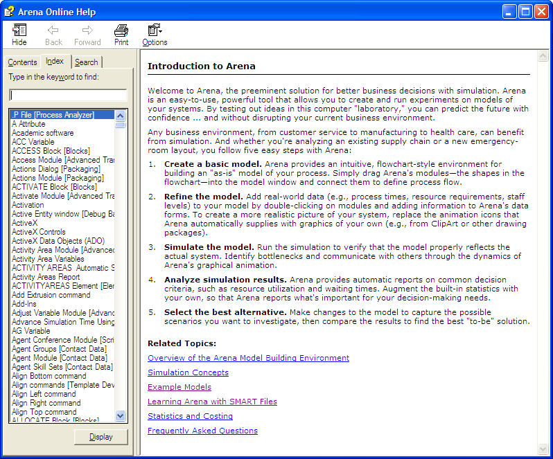
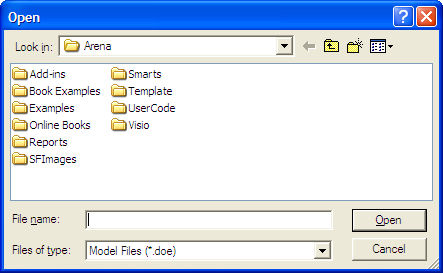
The example files are especially useful for getting a feel for what is possible with Arena . This text uses a number of Arena’s example models (as per Figure D.2) to illustrate various concepts. For example, the Smarts file folder has small Arena models that illustrate the use of particular modules. You are encouraged to explore and study the Help system. In addition to the on-line help system, the Environment comes with user manuals in the form of PDF documents, which includes an introductory tutorial in the “Arena User’s Guide” within the Online Books folder.
The following section provides an introduction to SIMAN for the primary purpose of helping you to understand potential error messages that you might get when developing and debugging an Arena model.
D.2 SIMAN and the Run Controller
In a programming language such as Visual Basic or Java, programmers must first define the data types that they will use (int, float, double, etc.) and declare the variables, arrays, classes, etc. for those data types to be used in the program. The programmer then uses flow of control (if-then, while, etc.) statements to use the data types to perform the desired task. Programming in Arena is quite different than programming in a base language like C. An Arena simulation program consists of the flow chart and data modules that have been used or defined within the model. By dragging and dropping flow chart modules and filling in the appropriate dialog box entries you are writing a program. Along with programming comes debugging and making sure that the program is working as it was intended. To be able to better debug your programs, you must have, at the very least, a rudimentary understanding of Arena’s underlying language called SIMAN. SIMAN code is produced by the environment, compiled, and then executed. This section provides an overview of SIMAN and Arena’s debugger called the Run Controller.
D.2.1 SIMAN MOD and EXP Files
To better understand some of the underlying programming concepts within Arena, it is useful to know that Arena is built on top of the SIMAN simulation programming system. To learn more about SIMAN, I suggest reviewing the following two textbooks Pegden et al. (1995) and Banks et al. (1995).
The section will review the pharmacy model of Chapter 2 in order to provide an overview of SIMAN. You should open up the pharmacy model from Chapter 2 in order to follow along. Using the Run/SIMAN/View menu will generate two files associated with the SIMAN program, the mod (model) file and the exp (experiment) file. The files can be viewed using the Window menu (Figure D.3, within the Arena Environment.
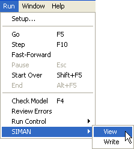
The mod file contains the SIMAN representation for the flow chart modules that were laid out in the model window. The exp file contains the SIMAN representation for the data modules and simulation run control parameters that are used during the execution of the simulation. mod stands for model, and exp stands for experiment.
The following code listing presents the experiment (exp) file for the pharmacy model. For readers that are familiar with C or C++ programming, the exp file is similar to the header files used in those languages. The experiment file defines the elements that are to be used by the model during the execution of the simulation. As indicated for this file, the major elements are categorized as PROJECT, VARIABLES, QUEUES, RESOURCES, PICTURES, REPLICATE, and ENTITIES. Additional categories that are not used (and thus not shown) in this model include TALLIES and OUTPUTS. Each of these constructs will be discussed as you learn more about the modules within the Environment. The experiment module declares and defines that certain elements will be used in the model. For example, the RESOURCES element indicates that there is a resource called Pharmacist that can be used in the model. Understanding the exact syntax of the SIMAN elements is not necessarily important, but being able to look for and interpret these elements can be useful in diagnosing certain errors that occur during the model debugging process. It is important to understand that these elements are defined during the model building process, especially when data modules are filled out within the Environment.
PROJECT, "Unnamed Project"," ",,,No,Yes,Yes,Yes,No,No,No,No,No,No;
VARIABLES: Get Medicine.WIP,CLEAR(System),CATEGORY("Exclude-Exclude"),DATATYPE(Real):
Dispose 1.NumberOut,CLEAR(Statistics),CATEGORY("Exclude"):
Create Customers.NumberOut,CLEAR(Statistics),CATEGORY("Exclude"):
Get Medicine.NumberIn,CLEAR(Statistics),CATEGORY("Exclude"):
Get Medicine.NumberOut,CLEAR(Statistics),CATEGORY("Exclude");
QUEUES: Get Medicine.Queue,FIFO,,AUTOSTATS(Yes,,);
PICTURES: Picture.Airplane:
Picture.Green Ball:
Picture.Blue Page:
Picture.Telephone:
Picture.Blue Ball:
Picture.Yellow Page:
Picture.EMail:
Picture.Yellow Ball:
Picture.Bike:
Picture.Report:
Picture.Van:
Picture.Widgets:
Picture.Envelope:
Picture.Fax:
Picture.Truck:
Picture.Person:
Picture.Letter:
Picture.Box:
Picture.Woman:
Picture.Package:
Picture.Man:
Picture.Diskette:
Picture.Boat:
Picture.Red Page:
Picture.Ball:
Picture.Green Page:
Picture.Red Ball;
RESOURCES: Pharmacist,Capacity(1),,,COST(0.0,0.0,0.0),CATEGORY(Resources),,AUTOSTATS(Yes,,);
REPLICATE, 1,,HoursToBaseTime(10000),Yes,Yes,,,,24,Minutes,No,No,,,Yes;
ENTITIES: Customer,Picture.Van,0.0,0.0,0.0,0.0,0.0,0.0,AUTOSTATS(Yes,,);The following listing presents the contents of the SIMAN model (mod) file for the Pharmacy model. The model file is similar in spirit to the “.c" or”*.cpp" files in C/C++ programming. It represents the flow chart portion of the model. In this code, “;" indicates a comment line. The capitalized commands represent special SIMAN language keywords. For example, the ASSIGN keyword is used to indicate an assignment statement, i.e. variable = expression.
;
; Model statements for module: BasicProcess.Create 1 (Create Customers)
;
2$ CREATE, 1,MinutesToBaseTime(expo(6)),Customer:MinutesToBaseTime(EXPO(6)):NEXT(3$);
3$ ASSIGN: Create Customers.NumberOut=Create Customers.NumberOut + 1:NEXT(0$);
;
;
; Model statements for module: BasicProcess.Process 1 (Get Medicine)
;
0$ ASSIGN: Get Medicine.NumberIn=Get Medicine.NumberIn + 1:
Get Medicine.WIP=Get Medicine.WIP+1;
9$ QUEUE, Get Medicine.Queue;
8$ SEIZE, 2,VA:
Pharmacist,1:NEXT(7$);
7$ DELAY: expo(3),,VA;
6$ RELEASE: Pharmacist,1;
54$ ASSIGN: Get Medicine.NumberOut=Get Medicine.NumberOut + 1:
Get Medicine.WIP=Get Medicine.WIP-1:NEXT(1$);
;
;
; Model statements for module: BasicProcess.Dispose 1 (Dispose 1)
;
1$ ASSIGN: Dispose 1.NumberOut=Dispose 1.NumberOut + 1;
57$ DISPOSE: Yes;There are two keywords that you should immediately recognize from the model window, CREATE and DISPOSE. Each non-commented line has a line number that identifies the SIMAN statement. For example, 57$ identifies the DISPOSE statement. These line numbers are especially useful in following the execution of the code. For example, within the code, you should notice the use of the NEXT() keyword. For example, on line number 54$, the keyword NEXT(1$) redirects the flow of control to the line statement 1$. You should also notice that many lines of code are generated from the placement of the three modules (CREATE, PROCESS, DISPOSE). Much of this SIMAN code is added to the model to enable additional statistical collection. The exact syntax associated with this generated SIMAN code will not be the focus of the discussion; however, the ability to review this code and interpret its basic functionality is essential when developing and debugging complex models. The code generated within the experiment and model files is not directly editable. The only way to change this code is to change the model in the data modules or within the model window. Finally, the SIMAN code is not directly executed on the computer. Before running the model, the SIMAN code is checked for syntax or other errors and then is translated to an executable form via a C/C++ compiler translation.
In a programming language like “C", the program starts at a clearly defined starting point, e.g. the”main()" function. Arena has no such main() function. Examining the actual SIMAN code that is generated from the model building process does not yield a specific starting point either. So where does start executing? To fully answer this question involves many aspects of simulation that have not yet been examined. Thus, at this point, a simplified answer to the question will be presented.
A simulation program models the changes in a system at specific events in time. These events are scheduled and executed by the simulation executive ordered by time. starts executing with the first scheduled event and then processes each event sequentially until there are no more events to be executed. Of course, this begs the question, how does the first event get scheduled? In , the first event is determined1 by the CREATE module with the smallest “First Creation" time. Figure D.4 illustrates the dialog box for the CREATE module. The text field labeled”First Creation" accepts an expression that must evaluate to a real number. In the figure, the expo() function is used to generate a random variable from the exponential distribution with a mean of six minutes to be used as the time of the event associated with the creation of an entity from this CREATE module.
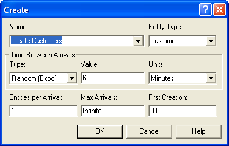
The careful reader should have the natural question, “What if there are ties?" In other words, what if there are two or more CREATE modules with a”First Creation" time set to the same value. For example, it is quite common to have multiple CREATE modules with their First Creation time set at zero. Which CREATE module will go first? This is where looking at the SIMAN model output is useful. The CREATE module with the smallest First Creation time that is listed first in the SIMAN model file will be the first to execute. Thus, if there are multiple CREATE modules each with a First Creation time set to zero, then the CREATE module that is listed first will create its entity first. Well, this is a simplified discussion. In general,there are other ways to get an initial event scheduled.
Now that we know that there is a language underneath Arena, we can better use Arena’s debugging tool: the Run Controller. The next section provides an overview of using the run controller.
D.2.2 Using the Run Controller
An integral part of any programming effort is debugging the program. Simulation program development in is no different. You have already seen how to do some rudimentary tracing via the READWRITE module; however, this section discusses some of the debugging and tracing capabilities that are built into the Environment. Arena’s debugging and tracing facilities come in two major forms: the run controller and animation. Some of the basic capabilities of Arena’s animation have already been demonstrated. Using animation to assist in checking your model logic is highly recommended. Aspects of animation will be discussed throughout this text; however, in this section concentrates on using Arena’s Run Controller. Arena’s Run Controller is found on the Run menu as shown in Figure D.5.
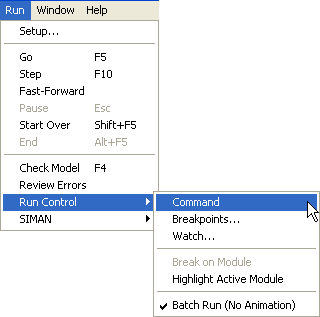
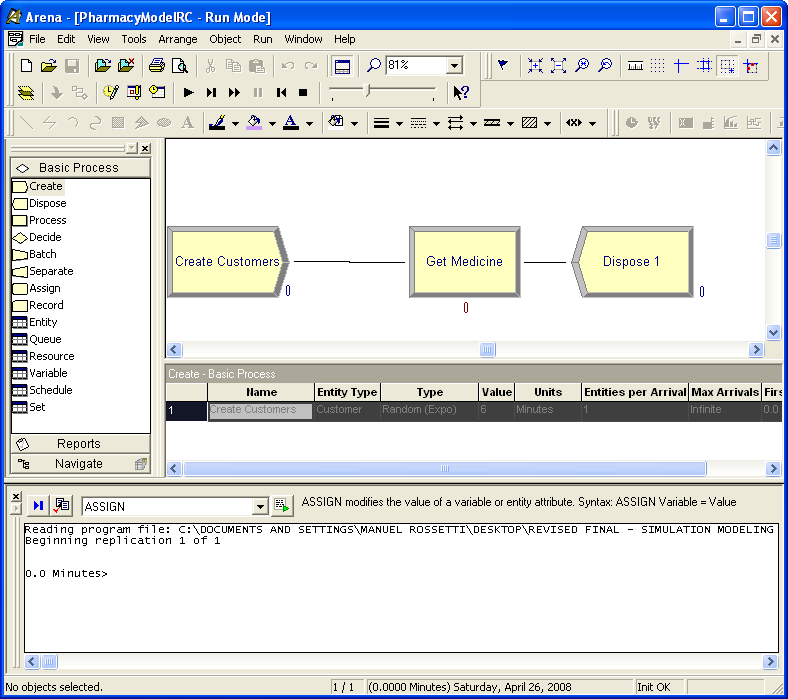
Figure D.6 illustrates how the Arena Environment appears after the run controller has been invoked on the original pharmacy model. The run controller allows tracing and debugging actions to be performed by the user through the use of various commands. Let’s first learn about the various commands and capabilities of the run controller. Go to Help and in the index search type in “Command-Driven Run Controller Introduction". You should see a screen that looks something like that shown in Figure D.7.
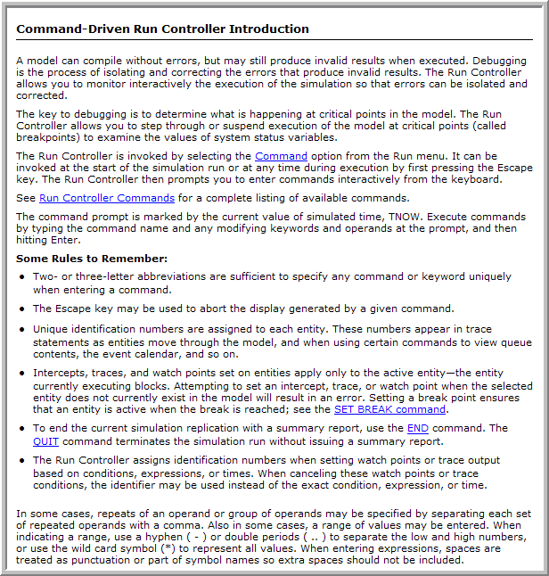
The Run Controller allows the system to be executed in a debugging mode. With the run controller, you can set trace options, watch variables and attributes, run the model until certain time or conditions are true, examine the values of entities attributes, etc. Within the help system, use the hyperlink that says “Run Controller Commands". You will see a list of commands for the run controller as shown in Figure D.8. Selecting any of these provides detailed instructions on how to use the command within the run controller environment.
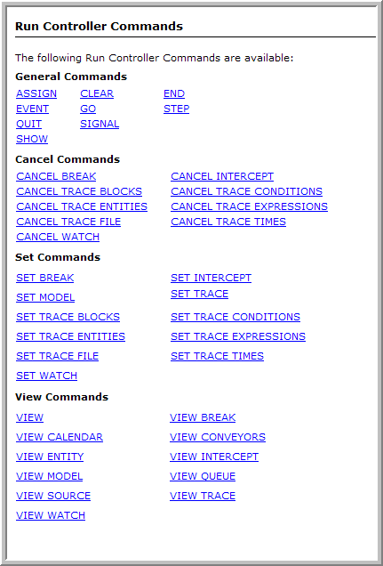
In what follows, some simple commands will be used to examine the drive through pharmacy model. Open the pharmacy model within and then open up the CREATE module and make sure that the time of the first arrival is set to 0.0. In addition, open up the PROCESS module and make sure that the delay expression is EXPO(5). This will help in ensuring that your output looks like what is shown in the figures. The first arrival will be discussed in what follows.
Now, you should invoke the run controller as indicated in Figure D.5. This will start the run of the model. will immediately pause the execution of the model at the first execution step. You should see a window as illustrated in Figure D.6. Let’s first turn the tracing on for the model. By default, embeds tracing output into the SIMAN code that is generated. Information about the current module and the active entity will be displayed. To turn on the tracing, enter “set trace" at the prompt (in Figure D.9) or select the command from the drop down menu of commands, then press return to enter the command. You can also press the toggle trace button.
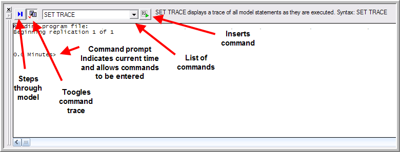
Now select the ’VCR-like run button for single stepping through the model. The button is indicated in Figure D.10. You should single step again into the model. Your command window should look like Figure D.10. Remember that the CREATE module was set to create a single arrival at time 0.0. This is exactly what is displayed. In addition, the trace output is telling you that the next arrival will be coming at time 2.0769136. The asterisk marking the output indicates the SIMAN statement that will be executed on the next step. Then, when the step executes the trace results are given and the next statement to execute is indicated.
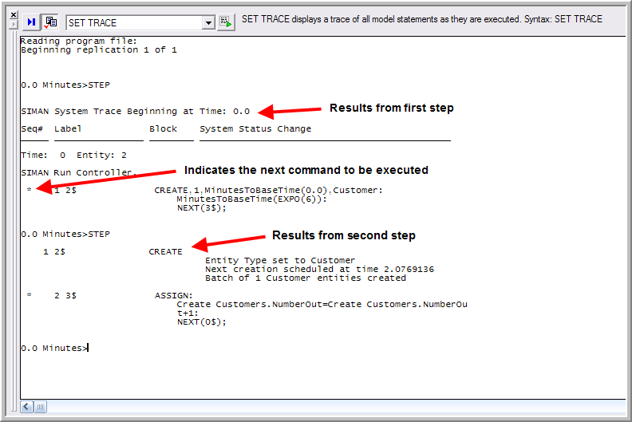
If you press the single step button twice, you will see that ASSIGN statements are executed and that the current entity is about to execute a QUEUE statement. After seven steps, the run controller output should appear as shown in Figure D.11.
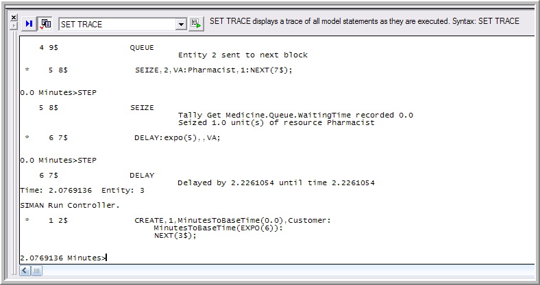
From this trace output, it is apparent that the entity was sent directly to the SEIZE block from the QUEUE block where it seized 1 unit of the pharmacist. Then, the entity proceeded to the DELAY block where it was delayed by 2.2261054 time units. This is the service time of the entity. Since the entity is entering service at time 0.0, it will thus leave at time 2.2261054. In summary, Entity 2 was created at time zero, arrived to the system, and attempted to get a unit of the pharmacist. Since the pharmacist was idle at the start of the simulation, the entity did not have to wait in queue and was able to immediately start service.
Now, something new has happened. The time has jumped to 2.0769136. As you might recall, this was the time indicated by the CREATE module for the next entity to arrive. This entity is denoted by the number 3. Entity 3 is now the active entity. What happened to Entity 2? It was placed on the future events list by the DELAY module and is scheduled to “wake up" at time 2.2261054. By using the VIEW CALENDAR command, you can see all the events that are scheduled on the event calendar. Figure D.12 illustrates the output of the VIEW CALENDAR command. There are two data structures within to hold entities that are scheduled. The”current events chain" represents the entities that are scheduled to occur at the current time. The “future events heap" represents those entities that are scheduled in the future.
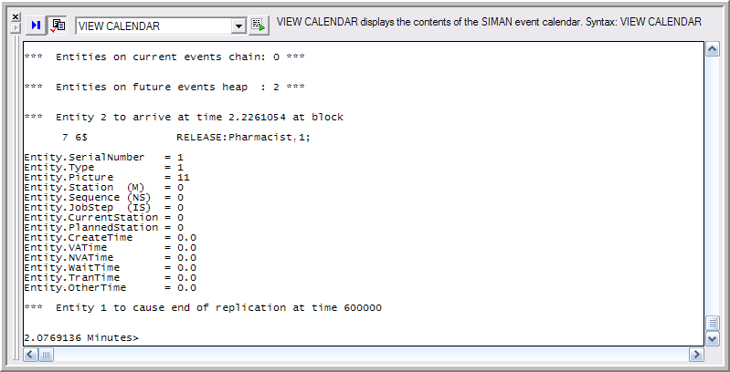
This output indicates that no other entities are scheduled for the current time and that Entity 2 is scheduled to activate at time 2.2261054. The entity is not going to ’arrive" as indicated. This is a typo in the output. The actual word should be “activate". In addition, the calendar indicates that an entity numbered 1 is scheduled to cause the end of the simulation at time 600000.0. uses an internal entity to schedule the event that represents the end of a replication. If there are a large number of entities on the calendar, then the VIEW CALENDAR command can be very verbose.
Single stepping the model allows the next entity to be created and arrive to the model. This was foretold in the last trace of the CREATE module.
The run controller provides the ability to stop the execution when a condition occurs. Suppose that you are interested in examining the attributes of the customers in the queue when at least 2 are waiting. You can set a watch on the number of customers in the queue and this will cause to stop whenever this condition becomes true. Then, by using the VIEW QUEUE command you can view the contents of the customer waiting queue. Carefully type in SET WATCH NQ(Get Medicine.Queue) = = 2 at the run controller prompt and hit return. Your run controller should look like Figure D.13.
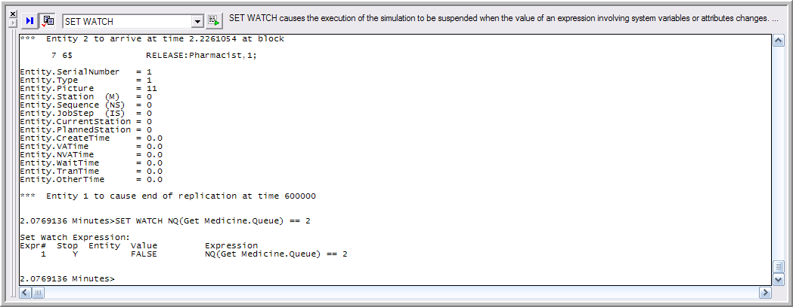
If you type GO at the run controller prompt, will run until the watch condition is met, see Figure D.14. The VIEW QUEUE command will show all the entities in all the queues, see Figure D.15. You can also select only certain queues and only certain entities. See the Arena’s help for how to specialize the commands.
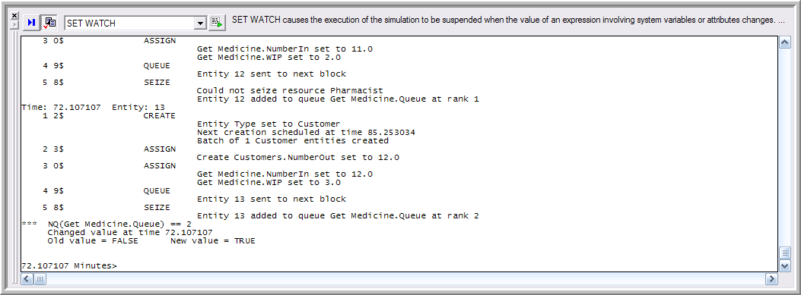
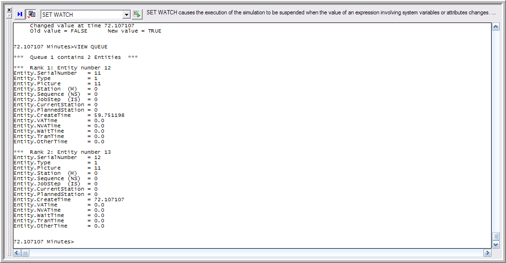
Arena also has a debugging bar within the run command controller that can be accessed from the Run \(>\) Run Control \(>\) Breakpoints menu, see Figure D.6. This allows the user to easily set breakpoints, view the calendar, view the attributes of the active entity, and set watches on the model. The debug bar is illustrated for this execution after the next step in Figure D.16. In the figure, the active entity tab is open to allow the attributes of the entity to be seen. The functionality of the debug bar is similar to many debuggers. The help system has a discussion on how to use the tabs within the debug bar. You can find out more by searching for Debug Bar in Arena’s help system.
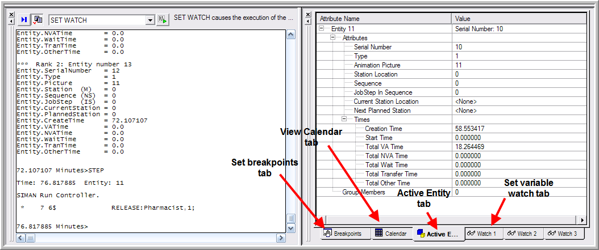
There are many commands that you can try to use during your debugging. Only a few commands have been discussed here. What do you think the following commands do?
go until 10.0show NR()show NQ()view entity
Restart your model. Turn on the tracing, type them in, and find out!
There are just a couple of final notes to mention about using the Run Controller. When the model runs to completion or if you stop it during the run, the run controller window will show the text based statistical results for your model, which can be quite useful. In addition, after you are done tracing your model, be sure to turn the tracing off (CANCEL TRACE) and to save the model with the tracing off. After you turn the tracing on for a model, Arena remembers this even though you might not be running the model via the run controller. The trace output will still be produced and will significantly slow the execution of your model down. In addition, the memory requirements of the trace output can be quite large and you may get out of memory errors for what appears to be inexplicable reasons. Don’t forget to turn the tracing off and to re-save!
The following section introduces some additional programming concepts that may prove useful when building Arena models.
D.3 Programming Concepts within Arena
Within Arena , programming support comes in two forms: laying down flow chart modules and computer language integration (e.g. VBA, C, etc.). This section presents some common programming issues that are helpful to understand when trying to get the most out of your models. First, we will examine how Arena stores the output from a simulation run. Then, the discussion involving input and output started in Chapter 4 will be continued. Finally, the use of Visual Basic for Applications (VBA) within the environment will be introduced.
D.3.1 Using the Generated Access File
Each time the simulation experiment is executed writes the statistical information collected during the run to a Microsoft Access database that has the same name as the model file. This database is what is used by the Crystal Reports report generator. You can also access this database and extract the statistical information yourself. This is useful if you need to post process the statistical information in a statistical package.
This section demonstrates how to extract information from this database. The intention is to make you aware of this database and to give you enough information so that you can use the database for some simple data extraction. There is detailed information concerning the Reports Database within the Help system. You should search under The Report Database. We will be reusing the LOTR example model from Chapter 4 within this section to illustrate these concepts.
When you create and run a model, e.g. yourmodel.doe, running the model will create a corresponding Microsoft Access file called yourmodel.mdb. Each time the model is run, the statistical information from the simulation is written to the database. If you change the input parameters to your model (without doing anything else), and then re-run the model, that model’s results are written to the database. Any previous data will be over written. There are two basic ways to save information from multiple simulation runs. The first is to simply rename the database file to a different name before rerunning the simulation. In this case, a new database file for the model will be created when it is run. This approach creates a new database for each simulation execution.
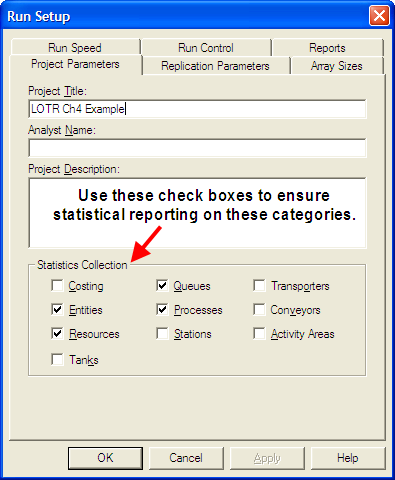
The second approach is to use the Projects Parameters panel within the Run \(>\) Setup menu dialog as illustrated in Figure D.17. The Project Title field identifies a particular project. This field is used by the database to identify a given project’s results. If this name is not changed when the simulation is rerun then the results are overwritten for the named project. Thus, by changing this name before each experiment, the database will contain the information for each experiment accessible by this project name. Now let’s take a look at the type of information that is stored within the database.
The Arena Reports database consists of a number of tables and queries. A table is a set of records with each row in the table having a unique identifier called its primary key and a set of fields (columns) that hold information about the current record. A query is a database instruction for extracting particular information from a table or a set of related tables.
The help system describes in detail the structure of the database. For accessing statistical information there are a few key tables:
- Definition
-
Holds the name of the statistical item from within the model, its type (e.g. DSTAT, TALLY, FREQ, etc.) and information about its collection and reporting.
- Statistic
-
The summary within replication results for a given statistic on a given replication
- Count
-
The ending value for a RECORD module designated as Count for a given replication.
- Frequency
-
The ending values for tabulated frequency statistics by replication
- Output
-
The value of a defined OUTPUT statistic for each replication.
The Definition table with the Statistic table can be used to access the replication information. Figure D.18 illustrates the fields within the Definition table. The important fields in the Definition table are ID, Name, and DefinitionTypeID. The ID is the primary key of the table, Name represents the name to appear on the report that was assigned within the model for the statistic, DefinitionTypeID indicates the type of statistical element. For the purposes of this section, the statistic types of interest are DSTAT (time-based), TALLY (observation-based), COUNTER (RECORD with count option), OUTPUT (captured at end of replication), and FREQUENCY (tabulates percentage of time spent in defined categories).
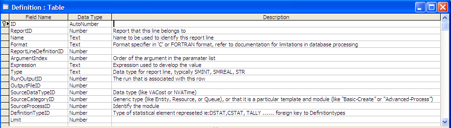
The Statistic table holds the statistical values for the within replication statistics as shown in Figure D.19. Notice that the Statistic table has a field called DefintitionID. This field is a database foreign key to the Definition table. With this field you can relate the two tables together and get the name and type of statistic.
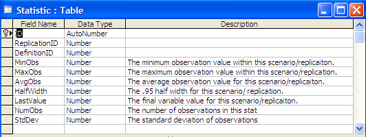
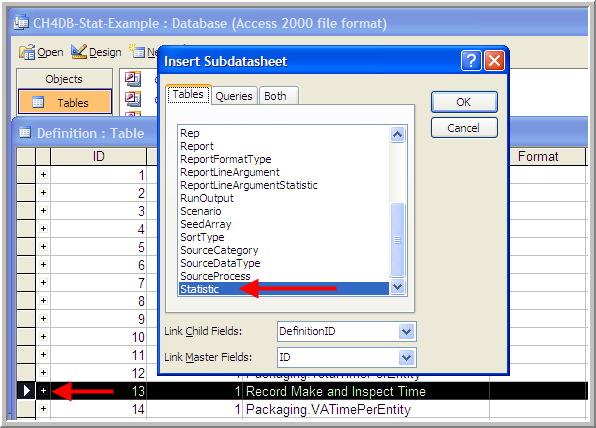
To explore these tables, you will work with the database called DB-Stat-Example.mdb. This file was produced by running the LOTRExample.doe with 56 replications and renaming the created database file. If you have Microsoft Access then open the database and then open the table called Definition. Select the desired row, e.g. row 8, and use Insert \(>\) Subdatasheet to get the Insert Subdatasheet dialog as shown in Figure D.20. Then, select the Statistic table and press the OK button as shown in the figure.
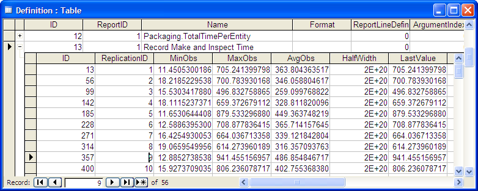
Figure D.21 shows the result of inserting the linked data sheet and selecting the “+" sign for the statistic named”Record Make and Inspect Time". You should right-click on the ReplicationID field and sort the subdatasheet by increasing replication number. From this table, you can readily assess the replication statistics. For example, the AvgObs column refers to the ending average across all the observations recorded during each replication. From this you can easily cut and paste any required information into a spreadsheet or a statistical package such as R. For those familiar with writing queries, this same information can be extracted by writing the query as shown in Figure D.22.
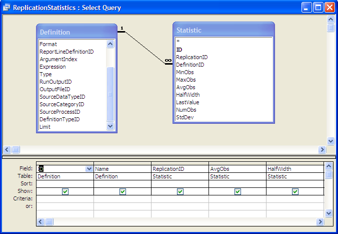
To summarize the statistics across the replications, you can write a group by query as shown in Figure D.23.
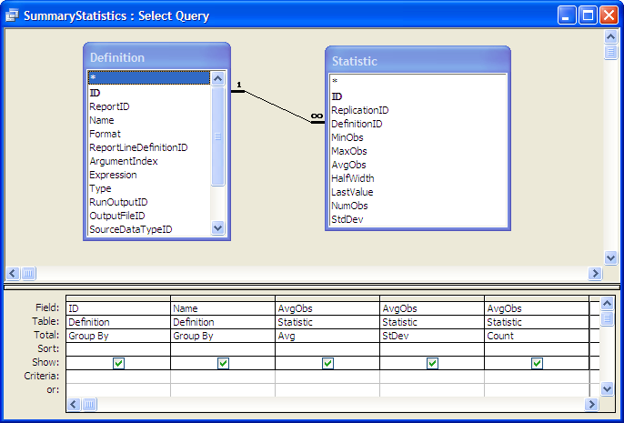
In the original LOTR Ring Maker, Inc. model, an OUTPUT statistic was defined to collect the time that the simulation ended. The OUTPUT statistic values collected at the end of each replication are saved in the Output table as shown in Figure D.24.
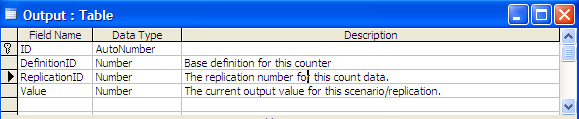
To see the collected values for a specific defined statistic, you can again use the Definition table. Open up the Definition table and scroll down to the row 48 which is the “TimeToMakeOrderStat” statistic. Select the row and using the Insert \(>\) Subdatasheet dialog, insert the Output statistic table as the subsheet. You should see the subsheet as shown in Figure D.25. These same basic techniques can be used to examine information on the COUNTERS and FREQUENCY statistics that have been defined in the model. If you name each run with a different Project Name, then you can do queries across projects. Thus, after you have completed your simulation analysis you do not need to rerun your model, you can simply access the statistics that were collected from within the Reports database. If you are an experienced Microsoft Access user you can then form custom queries, reports, charts, etc. for your simulation results.
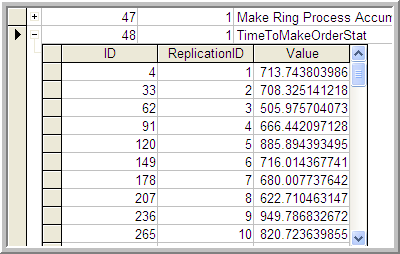
D.3.2 Working with Files, Excel, and Access
As discussed in Chapter 2, Arena allows the user to directly read from or write to files within a model during a simulation run by using the READWRITE Module located on the Advanced Process panel. Using this module, the user can read from the keyboard, read from a file, write to the screen, or write to a file. When reading from or writing to a file, the user must define an File Name and an optionally a file format. The File Name is the internal name (within the model) for the external file defined by the operating system. The internal file name is defined with the FILE data module. Using the FILE data module the user can specify the name and path to the external file. The file format can be specified either in the FILE data module or in the READWRITE module to override the specification given in the FILE data module. The format can be free format, a valid C or FORTRAN format, WKS for Lotus spreadsheets, Microsoft Excel, Microsoft Access, and ActiveX Data Objects Access types. In order for the READWRITE module to operate, an entity must pass through the module. Thus, as demonstrated in Chapter 2, it is typical to create a logic entity at the appropriate time of the simulation to read from or write to a file. This section presents examples of the use of the READWRITE module. Then, the pharmacy model is extended to read parameters from a database and write statistical output to a database.
D.3.2.1 Reading from a Text File
In this example, the SMART file, Smarts162.doe, is used to show how to read from a text file. Open up the file named Smarts162Revised.doe. Figure D.26 provides an overview of the model.
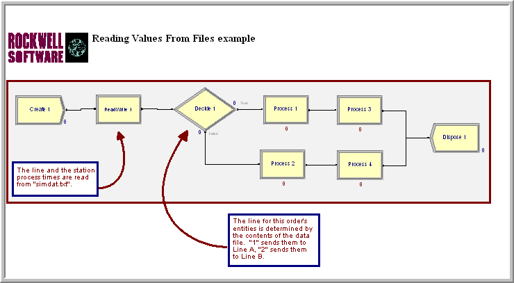
In this model, entities arrive according to a Poisson process, the type of entity and thus the resulting path through the processing is determined via the values within the simdat.txt file. The first number in the file is the type (1 or 2). Then, the following two numbers are the station 1 and station 2 processing times, as shown in Figure D.27. In Figure D.28, the READWRITE module reads directly from the SIMDAT file using a free format. Each time a read occurs, the attributes (myType, myStation1PT, myStation2PT) are read in. The myType attribute is tested in the DECIDE module and the attributes myStation1PT and myStation2PT are used in the PROCESS modules.
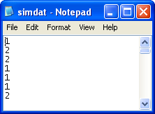
In Figure D.29, the end of file action specifies what to do with the entity when the end of the file is reached. The Error option can be used if an unexpected EOF condition occurs. The Dispose option may be used to dispose of the entity, close the file or ADO recordset and stop reading from the file. The Rewind option may be used so that every time you reach an EOF, you start reading the file or recordset again from Record 1. Finally, the Ignore option can be used if you expect an EOF and want to determine your own action (such as reading another file). With the Ignore option when the EOF is reached, all variables read within the READWRITE module will be set to 0. The READWRITE module can be followed with a DECIDE module to ensure that if all values are 0, the desired action is taken. The comment character is useful to embed lines within the file that are skipped. These lines can add columns headers, comments, etc. to the file for easier readability of the file. Suppose the comment character was a “;” then
; This would be a comment followed by a header comment
; Num Servers\ \ Arrival Rate
1 10The Initialize option indicates what should do at the beginning of a replication. The file can stay at the current position (Hold), be rewound to the beginning of the file (Rewind), or the file can be closed (Close).
The rest of the model is straightforward. In this case, the values from the file are read into the attributes of an entity. The values of an array can also be read in using this technique.
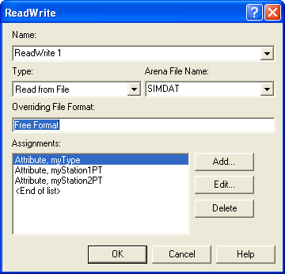
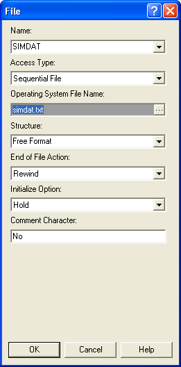
D.3.2.2 Reading a Two Dimensional Array
Smarts file, Smarts164.doe, Figure D.30, shows how to read into a two-dimensional array. The CREATE module creates a single entity and the ASSIGN module initializes the array index. Then, iterative looping is performed using a DECIDE module as previously discussed in Chapter 4.
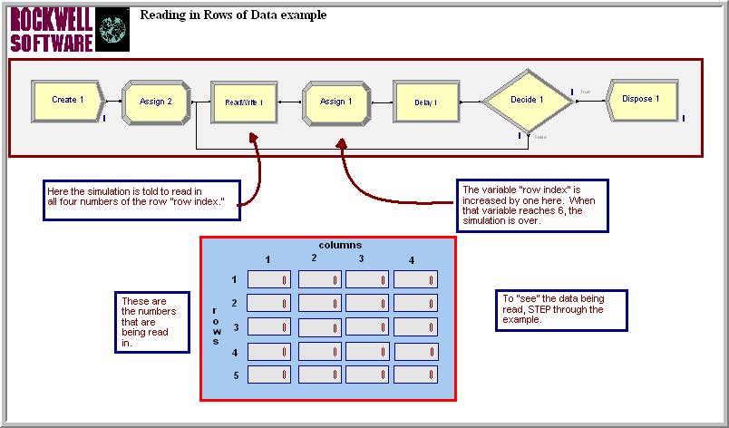
In this particular example, the entity delays for 10 minutes before looping to read in the next values for the array. The assignments for the READWRITE module are show in Figure D.31. You can easily see how the use of two WHILE-ENDWHILE loops could allow for reading in the size of the array. You would first read in the number of rows and columns and then loop through each row/column combination.
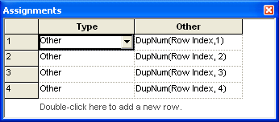
D.3.2.3 Reading from an Excel Named Range
So far the examples have focused on text files and for simple models these will often suffice. For more user friendly input of the data to files, you can read from Excel files. Smarts file 185, Figure D.32, shows how to read in values from an Excel named range.
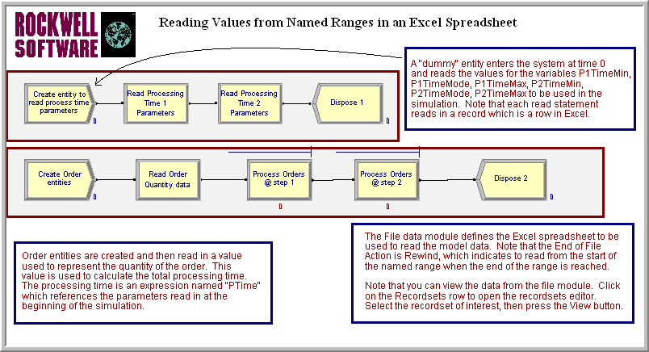
In order to read or write to an Excel named range, the named range must already be defined within the spreadsheet. Open up the Excel file Smarts185.xls. Select cells C5:E6 and look in the upper left hand corner of the Excel input bar. You will see the named range. By selecting any cells within Excel you can name them by typing the name into the named range box as indicated in Figure D.33. You can organize your spreadsheet in any way that facilitates the understanding of your data input requirements and then name the cells required for input. The named ranges are then accessible through the FILE module.
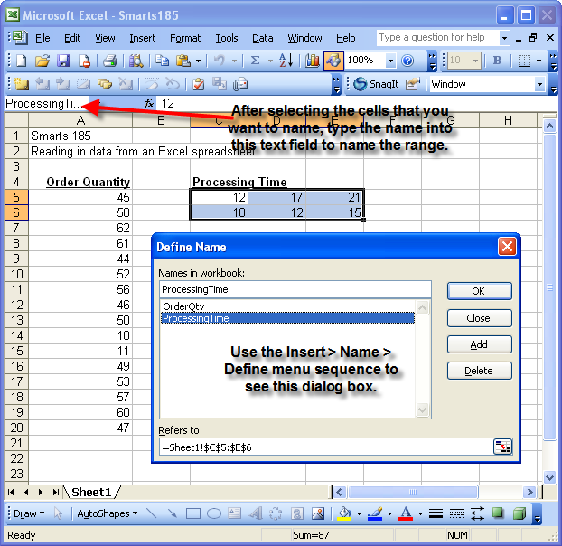
In this example, the processing times are distributed according to a triangular distribution. The named spreadsheet cells hold the parameters of the triangular distribution (min, mode, max) for each of the two PROCESS modules. An EXPRESSION module was used to define expressions with the variables to be read in indicating the parameter values. The order quantities are how much the customer has ordered. The lower CREATE module creates 50 arriving customers, where the order quantity is read and then used in the processing times. In the use of named ranges, essentially the execution of each READWRITE module causes a new row to be read. Thus, as indicated in Figure D.32 there are two back to back READWRITE modules in the top level create logic to read in each of the rows associated with the processing times. In the bottom create logic, each new entity reads in a new row from the named range.
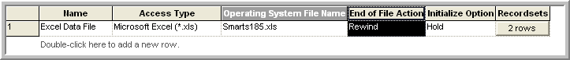
After setting up the spreadsheet and defining the named ranges within Excel, you must then a file with the named range. This is accomplished through the use of the FILE module. Select the FILE module within Smarts185.doe. The FILE module, Figure D.34, is already defined for you, but the steps will be indicated here. In the spreadsheet data view, double-click to add a new row and fill in AccessType, Operating System File Name, End of File Action, and Initialize Option the same as in the previous row. Then, click on the define Recordsets row button.
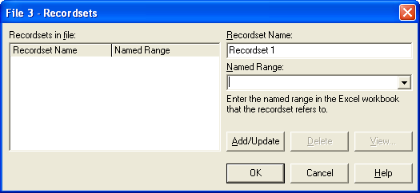
You will see a dialog box similar to Figure D.35. is smart enough to connect to Excel and to populate the Named Range text box with the named ranges that you defined for your spreadsheet. You need only select your desired named ranges and click on Add/Update. This will add the named range as a record set in the Recordsets in file area. You should add both named ranges as shown in Figure D.36. Once you select a named range you can also view the data in the range by selecting the View button. If you try this with the ProcessingTime named range, you will see a view of the data similar to that shown in Figure D.36. As you can see, it is very simple to define a named range and connect to it.
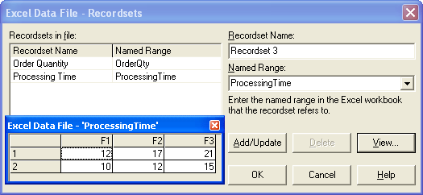
Now, you have to indicate how to use the named range within the READWRITE module. Open up the READWRITE module, see Figure D.37, for reading the processing time 1 parameters. After selecting read from file and the associated file name, will automatically recognize the file as a named range based Excel file. You can then choose the recordset that you want to read from and then the module works essentially as it did in our text file examples. You can also use these procedures to write to Excel named ranges and to Access using active data objects (ADO). See for example SMARTS files 189 and 190.
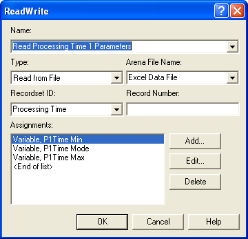
Making the simulation file driven takes special planning on how to organize the model to take advantage of the data input. Using sets and arrays appropriately is often necessary when making a model file driven. Here are some ideas for using files:
Reading in the parameters of distributions
Reading in model parameters (e.g. reorder points, order quantities, etc.)
Reading in specified sequences for entities to follow. Define a set of sequences and read in the index into the set for the entity to follow. You can then define different sequences based on a file.
Reading in different expressions to be used. Define a set of expressions and read in the index into the set to select the appropriate expression.
Reading in a number of entities to create, then create them using a SEPARATE module.
Creating entities and assigning their attributes based on a file
Reading in each entity from a file to create a trace driven simulation
D.3.2.4 Reading Model Variables from Microsoft Access
This example uses the pharmacy model and augments it to allow the parameters of the simulation to be read in from a database. In addition, the simulation will write out statistical data at the end of each run. This example involves the use of Microsoft Access, if you do not have Access then just follow along with the text. In addition, the creation of the database show in Figure D.38 will not be discussed.
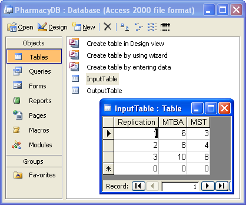
The database has two tables: one to hold the inputs and one to hold the output across simulation replications. Each row in the table InputTable has three fields. The first field indicates the current replication, the second field indicates the mean time between arrivals for that experiment and the last field indicates the mean service time for the experiment. This example will only have a total of 3 replications; however, each replication is not going to be the same. At the beginning of each replication, the parameters for the replication will be read in and then the replication will be executed. At the end of the replication, some of the statistics related to the simulation will be written out to the table called OuputTable. For simplicity, this table also only has three columns. The first column is the replication number, the second column will hold the average waiting time in the queue and the third column will hold the half-width reported from .
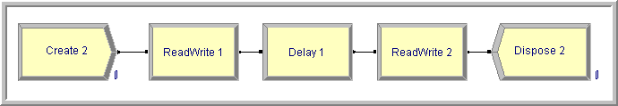
Open up the PharmacyModelRWv1.doe file and examine the VARIABLE module. Notice that variables have been defined to hold the mean time between arrivals and the mean service time. Also, you should look at the CREATE and PROCESS modules to see how the variables are being used. The logic to read in the parameters at the beginning of each replication and to write the statistics at the end of the replication must now be implemented. The logic will be quite simple as indicated in Figure D.39. An entity should be created at time zero, read the parameters from the database, delay for the length of the simulation, and then write out the data.
You should lay down the modules indicated in Figure D.39. Now, the FILE module must be defined. The process for using Access as a data source is very similar to the way Excel named ranges operate. Figure D.40 shows the basic setup in the data sheet view. Opening up the recordset rows allows you to define the tables as recordsets. You should define the recordsets as indicated in the figure.
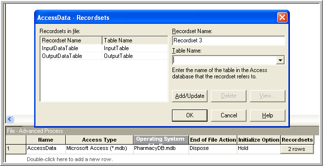
The two READWRITE modules are quite simple. In the first READWRITE module (Figure D.41), the variables RepNum, MTBA, and MST are assigned values from the file. This will occur at time zero and thereby set the parameters for the run. The second READWRITE module (Figure D.42) writes out the value of the RepNum and uses the functions TAVG() and THALF() to get the values of the statistics associated with the waiting time in queue.
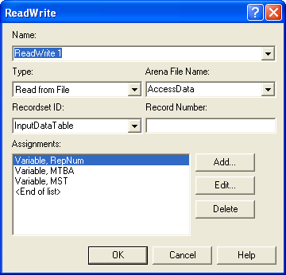
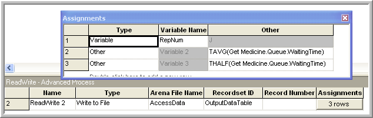
Now, the setup of the replications must be considered. In this model, at the beginning of each replication the parameters will be read in. Since there are 3 rows in the database input table, the number of replications will be set to 3 so that all rows are read in. In addition, the run length is set to 1000 hours and the base time unit to minutes, as shown in Figure D.43.
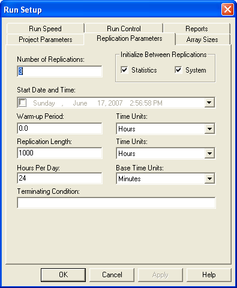
Only one final module is left to edit. Open up the DELAY module. See Figure D.44. The entity entering this module should delay for the length of the simulation. has a special purpose variable called TFIN which holds the length of the simulation in base time units. Thus, the entity should delay for TFIN units. Make sure that the units match the base time units specified in the Run Setup dialog.
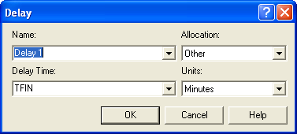
After the entity delays for TFIN time units, it enters the READWRITE module where it writes out the values of the statistics at that time. After running the model, you can open up the Microsoft Access database and view the OutputTable table. You should see the results for each of the three replications.
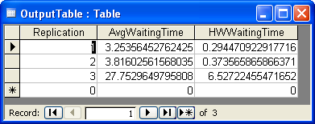
Suppose now you wanted to replicate each run involving the parameter settings 3 times. All you would need to do would be to set up your Access input table as shown in Figure D.45 and change the number of replications to 9 in the Run Setup dialog.
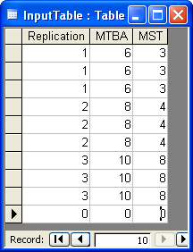
This same approach can be easily repeated for larger models. This allows you to specify a set of experiments, say according to an experimental design plan, execute the experiments and easily capture the output responses to a database. Then, you can use any of your favorite statistical analysis tools to analyze your experiments. I have found that for very large experiments where I want fine grained control over the inputs and outputs that the approach outlined here works quite nicely.
D.3.3 Using Visual Basic for Applications
This section discusses the relationship between and Visual Basic for Applications (VBA). VBA is Microsoft’s macro language for applications built on top of the Windows operating system. As its name implies, VBA is based on the visual basic (VB) language. VBA is a full featured language that has all the aspects of modern computer languages include the ability to create objects with properties and methods. A full discussion of VBA is beyond the scope of this text. For an introduction to VBA for people interested in modeling, you might refer to (Albright, 2001).
The section assumes that the reader has some familiarity with VBA or is, at the very least, relatively computer language literate. This topic is relatively advanced and typical usage of often does not require the user to delve into VBA. The interaction between and VBA will be illustrated through a discussion of the VBA block and the use of Arena’s user defined function. Through VBA, also has the ability to create models (e.g. lay down modules, fill dialogs, etc) via Arena’s VBA automation model. This advanced topic is not discussed in this text, but extensive help is available on the topic via the on-line help system.
To understand the connection between and VBA, you must understand the user event oriented nature of VBA. Do not confuse the user interaction events discussed in this section with discrete events that occur within a simulation. Visual basic was developed as an augmentation of the BASIC computer language to facilitate the development of visual user interfaces. User interface interaction is inherently event driven. That is, the user causes various events to occur (e.g. move the mouse, clicks a button, etc.) that the user interface must handle. To build a program that interacts significantly with the user involves writing code to react to specific events. This paradigm is quite useful, and as VB became more accepted, the event-driven model of computing was expanded beyond that of directly interacting with the user. Additional non-user interaction events can be defined and can be called at specific places within the execution of the program. The programmer can then place code to be called at those specific times in order to affect the actions of the program. is integrated with VBA through a VBA event model.
There are a number of VBA events that are predefined within Arena’s VBA interaction model. The following key VBA events will be called automatically if an event routine is defined for these events in VBA within .
- DocumentOpen, DocumentSave
-
These events are called when the model is opened or saved. The SIMAN object is not available, but the object can be used. The SIMAN object will be discussed within some examples.
- RunBegin
-
This event is called prior to the model being checked. When the model is checked, the underlying SIMAN code is compiled and translated to executable machine code. You can place code within the RunBegin event to add or change modules with VBA automation so that the changes get complied into the model. The SIMAN object is not available, but the object can be used. This event occurs automatically when the user invokes a simulation run. The object will not be discussed in this text, but plenty of help is available within the help system.
- RunBeginSimulation
-
This event is called prior to starting the simulation (i.e. before the first replication). This is a perfect location to set data that will be used by the model during all replications. The SIMAN object is active when this event is fired and remains active until after RunEndSimulation fires. Because the simulation is executing, changes using the object via automation are not permissible.
- RunBeginReplication
-
This event is called prior to the start of each replication.
- OnClearStatistics
-
This event is called if the clear statistics option has been selected in run setup. This event occurs prior to each replication and at the designated warm up time if a warm up period has been supplied.
- RunEndReplication
-
This event is called at the end of each replication. It represents a perfect location for capturing replication statistical data. It is only called if the replication completes naturally with no interruption from errors or the user.
- RunEndSimulation
-
This event is called after all replications are completed (i.e. after the last replication). It represents a perfect place to close files and get across replication statistical information.
- RunPause, RunRestart, RunResume, RunStep, RunFastForward, RunBreak
-
These events occur when the user interacts with Arena’s run control (e.g. pauses the simulation via the pause button on the VCR control). These events are useful for prompting the user for input.
- RunEnd
-
This event is called after RunEndSimulation and after the run has been ended. The SIMAN object is no longer active in this event.
- OnKeystroke, OnFileRead, OnFileWrite, OnFileClose
-
These events are fired by the SIMAN runtime engine if the named event occurs.
- UserFunction, UserRule
-
The UserFunction event is fired when the UF function is used within the model. The UserRule event is fired when the UR function is called within the model.
- SimanError
-
This event is called if SIMAN encounters an error or warning. The modeler can use this event to trap SIMAN related errors.
A VBA event is defined, if a subroutine is written that corresponds to the VBA event naming convention within the ThisDocument module accessed through the VBA editor. In VBA, a file that holds code is called a module. This should not be confused with an module.
D.3.3.1 Using VBA
Let us take a look at how to write a VBA event for responding to the RunBegin event. The file, VBAEvents.doe that is available with this chapter, should be opened. The model is a simple CREATE, PROCESS, DISPOSE combination to create entities and have a model to illustrate VBA. The specifics of the model are not critical to the discussion here. In order to write a subroutine to handle the RunBegin event, you must use the VBA Editor. Within the environment use the Tools \(>\) Macro \(>\) Show Visual Basic Editor menu option (as shown in Figure D.47).
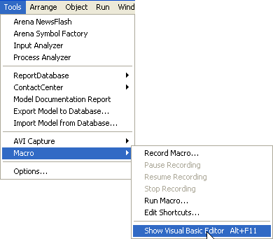
This will open the VBA Editor as shown in Figure D.48. If you double click on the ThisDocument item in the VBA projects tree as illustrated in Figure D.48, you will open up a VBA module that is specifically associated with the current model.
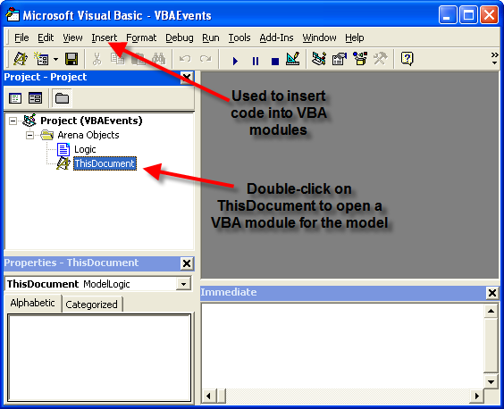
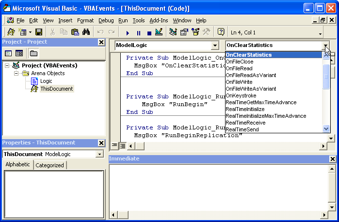
A number of VBA events (Figure D.49) have already been defined for the model. Let’s insert an event routine to handle the RunBegin event. Place your cursor on a line within the ThisDocument module and go to the event drop down box called (General). Within this drop down box, select Model Logic. Now go to the adjacent drop down box that lists the available VBA events. Clicking on this drop down list will reveal all the possible VBA events that are available, as shown in Figure D.49. The event routines that have already been written are in bold. As can be seen the OnClearStatistics event is indicating that it has been written and this can be confirmed by looking at the code associated with the ThisDocument module. At the end of the list is the RunBegin event. Select the RunBegin event and an event routine will automatically be placed within the ThisDocument module at your current cursor location.
The event procedure has a very special naming convention so that it can be properly called when the VBA integration mechanism needs to call it during the execution of the model. The code will be very simple, it will just open up a message box that indicates that the RunBegin VBA event has occurred. The code to open up a message box when the event procedure fires is as follows:
Private Sub ModelLogic_RunBegin()
MsgBox "RunBegin"
End SubThe use of the MsgBox function in this example is just to illustrate that the subroutine is called at the proper time. You will quite naturally want to put more useful code within your VBA event subroutines.
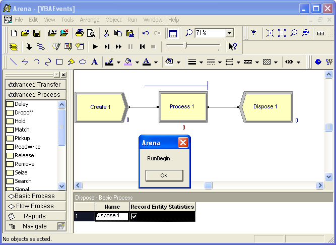
A number of similar VBA event subroutines have been defined with similar message boxes. Go back to the Environment and press the run button on the run control toolbar. As the model executes a series of message boxes will open up. After each message box appears, press okay and continue through the run. As you can see, the code in the VBA event routines is executed when fires the corresponding event. The use of the message box here is a bit annoying, but clearly indicates where in the sequence of the run that the event occurs.
The Smart files are a good source of examples related to VBA. The following models are located in the Smarts folder within your main folder (e.g., Program Files \(>\) Rockwell Software \(>\) Smarts).
Smarts 001: VBA—VariableArray Value
Smarts 016: Displaying a Userform
Smarts 017: Interacting with Variables
Smarts 024: Placing Modules and Filling in Data
Smarts 028: Userform Interaction
Smarts 081: Using a Shape Object
Smarts 083: Ending a Model Run
Smarts 086: Creating and Editing Resource Pictures
Smarts 090: Manipulating a Module’s Repeat Groups
Smarts 091: Creating Nested Submodels Via VBA
Smarts 098: Manipulating Named Views
Smarts 099: Populating a Module’s Repeat Group
Smarts 100: Reading in Data from Excel
Smarts 109: Accessing Information
Smarts 121: Deleting a Module
Smarts 132: Executing Module Data Transfer
Smarts 142: VBA Submodels
Smarts 143: VBA—Animation Status Variables
Smarts 155: Changing and Editing Global Pictures
Smarts 156: Grouping Objects
Smarts 159: Changing an Entity Attribute
Smarts 161: User Function
Smarts 166: Inserting Entities into a Queue
Smarts 167: Changing an Entity Picture
Smarts 174: Reading/Writing Excel Using VBA Module
Smarts 175: VBA Builds and Runs a Model
Smarts 176: Manipulating Arrays
Smarts 179: Playing Multimedia Files Within a Model
Smarts 182: Changing Model Data Interactively
The Smarts files 001, 024, 090, 099, and 109 are especially illuminating. In the next section, the UserFunction event and the VBA block are illustrated.
D.3.3.2 The VBA Module and User Defined Functions
This section presents how to 1) use a user form to set the value of a variable, 2) call a user defined function which uses the value of an attribute to compute a quantity, and 3) use a VBA block to display information at a particular point in the model. Since the purpose of this example is to illustrate VBA, the model is a simple single server queuing system as illustrated in Figure D.51. The model consists of CREATE, ASSIGN, PROCESS, VBA, and DISPOSE modules.
The VBA block is found on the Blocks panel. To attach the Blocks panel, you can right-click in the Basic Process Panel area and select Attach, and then find the Blocks.tpo file. Now you are ready to lay down the modules as shown in Figure D.51. The information for each module is given as follows:
CREATE: Choose Random(expo) with mean time between arrivals of 1 hour and set the maximum number of entities to 5.
ASSIGN: Use and attribute called
myPTand assign a U(10,20) random number to it via the UNIF(10,20) function.PROCESS: Use the SEIZE, DELAY, RELEASE option. Define a resource and seize 1 unit of the resource. In the Delay Type area, choose Expression and type in UF(1) for the expression.
Using the VARIABLE data module to define a variable called
vPTFactorand initialize it with the value 1.0.
No editing is necessary for the VBA block and the DISPOSE module. If you have any difficulty completing these steps you can look at the module dialogues in the file called VBAExample.doe.
Now you are ready to enter the world of VBA. Using Alt-F11, open the VBA Editor. Double-click on the ThisDocument object and enter the code as shown in the following code. If you don’t want to retype this code, then you can access it in the file VBAExample.doe.
Option Explicit
'' Declare global object variables to refer
'' to the Model and SIMAN objects
'' Public allows them to be accessed anywhere in this module
'' or any other vba module
Public gModelObj As Model
Public gSIMANObj As SIMAN
'' Variables can be accessed via their uniquely assigned
'' symbol number. An integer variable is needed to hold the index
'' It is declared public here so it can be used throughout this module
'' and other vba modules
Public vPTFactorIndex As Integer
'' Index for the myPT attribute
'' It is declared private here so it can be used throughout this module
Private myPTIndex As IntegerLet’s walk through what this code means. The two public variables gModelObj and gSIMANObj are object reference variables of type Model and SIMAN respectively. These variables allow access to the properties and methods of these two objects once the object references have been set. The Model object is part of Arena’s VBA Object model and allows access to the features of the Model as a whole. The details of Arena’s Object model can be found within the help system by searching on Automation Programmer’s Reference. The SIMAN object is created after the simulation has been complied and essentially gives access to the underlying simulation engine. The variables vPTFactorIndex and myPTIndex will be used to index into SIMAN to access the variable vPTFactor and the attribute myPT.
This example will use VBA forms to get some input from the user and to also display some information. Thus, the forms to be used in the example need to be developed. Use Insert \(>\) UserForm to create two forms called Interact and UserForm1 as shown in Figure D.52.
Use the show toolbox button to show the VBA controls toolbox. Then, you can select the desired control and place your cursor on the form at the desired location to complete the action. Build the forms as shown in the Figure D.52 and Figure D.53. To place the labels used in the forms, use the label control (right next to the textbox control on the Toolbox). The name of a form can be changed in the Misc \(>\) (Name) property as shown in Figure D.54. Now that the forms have been built, the controls on the forms can be referenced within other VBA modules.
Before looking at the code for this situation, we need to understand how to interchange data between the model and the VBA code. This will be accomplished using the SIMAN object within the VBA environment. When a model is complied each element of the model is numbered. This is called the symbol number. The method, SymbolNumber(element name), on the SIMAN object will return the index symbol number that can be used as an identifier for the named element. To find information on the SIMAN object search the help system on SIMAN Object (Automation). There are many properties and methods associated with the SIMAN Object. The documentation states the following concerning the SymbolNumber method.
SymbolNumber Method
Syntax SymbolNumber (symbolString As String, index1 As Long, index2 As Long) As Long
Description All defined simulation elements have a unique number. For those constructs that have names, this function may be used to return the number corresponding to the construct name. For example, many of the methods in the SIMAN Object require an argument like resourceNumber or variableNumber, etc. to identify the specific element. Since it is more common to know the name rather than the number of the item, SymbolNumber(“MyElementName”) is often used for the elementNumber type argument.
As indicated in the documentation, an important part of utilizing the SIMAN object’s other methods is to have access to an element’s unique symbol number. The symbol number is an integer and is then used as an index into other method calls to identify the element of interest. According to the help system the VariableArrayValue property can be used either to get or to set the value associated with the variable identified by the index number.
VariableArrayValue Read/Write Property
Syntax VariableArrayValue (variableNumber As Long) As Double
Description Gets/Sets the value of the variable, where variableNumber is the instance number of the variable as listed in the VARIABLES Element. For more information on working with variables in automation, please see making variable assignments.
Now we are ready to look at the code. The VBA code shows the RunBeginSimulation event. When the user executes the simulation, the RunBeginSimulation event is fired. The first two lines of the routine set the object references to the Model object and to the SIMAN object in order to store the values in the global variables that were previously defined for the VB module. The SIMAN object can then be accessed through the variable gSIMANObj to get the indexes of the attribute and variable myPT and vPTFactor. In the exhibit, after the indexes to the myPT and vPTFactor are found, the SIMAN object is used to access the VariableArrayValue property. In this code, the value of the variable is accessed and then assigned to the value of the TextBox1 control on the Interact form. Then, the Interact form is told to show itself and the focus is set to the text box, TextBox1, on the form for user entry.
Private Sub ModelLogic_RunBeginSimulation()
'' set object references
Set gModelObj = ThisDocument.Model
Set gSIMANObj = ThisDocument.Model.SIMAN
'' Get the index to the symbol number
'' if the symbol does not exist there will be an error,
'' There is no error handling in this example
'' The SymbolNumber method of the SIMAN object returns
'' the index associated with the named symbol
'' get the index for the myPT attribute
myPTIndex = gSIMANObj.SymbolNumber("myPT")
'' get the index for the vPTFactor variable
vPTFactorIndex = gSIMANObj.SymbolNumber("vPTFactor")
'' set the current value of the textbox to the
'' current value of the vPT variable in Arena
'' The VariableArrayValue method of the SIMAN object
'' returns the value of the variable associated with the index
Interact.TextBox1.value =
gSIMANObj.VariableArrayValue(vPTFactorIndex)
'' Display the user form
Interact.Show
'' Set the focus to the textbox
Interact.TextBox1.SetFocus
'' The code for setting the variable's value is
'' in the OK button user form code
End SubWhen the Interact form is displayed, the text box will show the current value of the variable. The user can then enter a new value in the text box and press the OK button. Since the user interacted with the OK button, the button press event within the VBA form code can be used to change the value of the variable within to what was entered by the user.
To enter the code to react to the button press, go to the Interact form and select the OK button on the form. Right-click on the button and from the context menu, select View Code. This will open up the form’s module and create a VBA event to react to the button click.
The code provided next shows the use of the VariableArrayValue property to assign the value entered into the textbox to the vPTFactor variable. To access a public variable within the ThisDocument module, you precede the variable with ThisDocument. (e.g. ThisDocument.gSIMANObj). Once the value of the text box has been assigned to the variable, the form is hidden and input focus is given back to the model via the ThisDocument.gModelObj.Activate method.
Private Sub CommandButton2_Click()
'' when the user clicks the ok button
'' Set the current value of vPT to the value
'' currently in the textbox
'' uses the global variable vPTFactorIndex
'' defined in module ThisDocument
'' uses the global variable for the SIMAN object
'' defined in ThisDocument
ThisDocument.gSIMANObj.VariableArrayValue(ThisDocument.vPTFactorIndex) = TextBox1.value
'' hide the form
Interact.hide
'' Tell the model to resume running
ThisDocument.gModelObj.Activate
End SubSince the setting of the variable vPTFactor occurs as a result of the code initiated by the RunBeginSimulation event the value supplied by the user will be used for the entire run (unless changed again within the model or within VBA).
The model will now begin to create entities and execute as a normal model. Each entity that is created will go through the ASSIGN module and have its myPT attribute set to a randomly drawn U(10,20) number. Then the entity proceeds to the PROCESS module where it invokes the SEIZE, DELAY, and RELEASE logic. In this module, the processing time is specified by a user defined function via the UF(fid) function. The UF(fid) function will call associated VBA code from directly within an model.
You should think of the UF(fid) function as a mechanism by which you can easily call VBA functions. The fid argument is an integer that will be passed into VBA. This argument can be used to select from other user written functions as necessary. The following code exhibit shows the code for the UF function for this example.
'' This Function allows you to pass a user
'' defined value back to the
'' module which called upon the UF(functionID) function in Arena.
'' Use the functionID to select the function that you want via
'' the case statement, add additional functions as necessary
'' The functions can obviously be named something
'' more useful than UserFunctionX()
'' The functions must return a double
Private Function ModelLogic_UserFunction(ByVal entityID As Long,
ByVal functionID As Long) As Double
'' entityID is the active entity
'' functionID is supplied when the user calls UF(functionID)
Select Case functionID
Case 1
ModelLogic_UserFunction = UserFunction1()
Case 2
ModelLogic_UserFunction = UserFunction2()
End Select
End FunctionWhen you use the UF function, you must write your own code. To write the UF function, use the drop down box that lists the available VBA events on the ThisDocument module and select the UserFunction event. The UserFunction event routine that is created has two arguments. The first argument is an identifier that represents the current active entity and the second argument is what was supplied by the call to UF(fid).
When you create the function it will not have any code. You should organize your code in a similar fashion. As can be seen in the exhibit, the supplied function identifier is used within a VBA select-case statement to select from other available user written functions.
By using this select-case construct, you can easily define a variety of your own functions and call whichever function you need from within the model by supplying the appropriate function identifier.
In order to implement the called functions, we need to understand how to access attributes associated with the active entity. This can be accomplished using two methods associated with the SIMAN object: ActiveEntity and AttributeValue. The help system describes the use of these methods as follows.
ActiveEntity Method
Syntax ActiveEntity () As Long
Description Returns the record location (the entity pointer) of the currently active entity, or 0 if there is not one. This is particularly useful in a VBA block Fire event to access attributes of the entity that entered the VBA block in the model.
AttributeValue Method
Syntax AttributeValue (entityLocation As Long, attributeNumber As Long, index1 As Long, index2 As Long) As Double
Description Returns the value of general-purpose attribute attributeNumber* with associated indices index1 and index2. The number of indices specified must match the number defined for the attribute.*
Let’s see how to put these methods into action within the user defined functions. The following code exhibit shows how to access the value of an attribute associated with the active entity.
Private Function UserFunction1() As Double
'' each entity has a unique id
Dim activeEntityID As Long
'' get the number of the active entity
'' this could have been passed from ModelLogic_UserFunction
activeEntityID = gSIMANObj.ActiveEntity
Dim PTvalue As Double
'' get the value of the myPT attribute
PTvalue = gSIMANObj.AttributeValue(activeEntityID, myPTIndex, 0, 0)
Dim factor As Double
factor = gSIMANObj.VariableArrayValue(vPTFactorIndex)
'' this could be complicated function of the attribute/variables
'' here it is very simple (and could have been done within Arena itself
'' rather than VBA
UserFunction1 = PTvalue * factor
End FunctionFirst, the ActiveEntity property of the SIMAN object is used to get an identifier for the current active entity (i.e. the entity that entered the VBA block). Then, the AttributeValue method of the SIMAN object is used to get the value of the attribute.
Within Arena, attributes can be defined as multi-dimensional via the ATTRIBUTES module. Multi-dimensional attributes are not discussed in this text, but the AttributeValue method allows for this possibility. The two indices that can be supplied indicate to the SIMAN objecti how to access the attribute. In the example, these two values are zero, which indicates that this is not a multi-dimensional attribute. Once the values of the myPT attribute and the vPTFactor variable are retrieved from the SIMAN object, they are used to compute the value that is returned by the UF function. The variables factor and PTvalue are used to calculate the product of their values. Admittedly, this calculation can be more readily accomplished directly in without VBA, but the point is you can implement any complicated calculation using this architecture.
With the UF function, you can easily invoke VBA code from essentially any place within your model. The UF function is especially useful for returning a value back to the model. Using the VBA block, you can also invoke specific VBA code when the entity passes through the block. In this example, after the entity exits the PROCESS module, the entity enters a VBA block.
When you use a VBA block within your model, each VBA block is given a unique number. Then, within the ThisDocument module, an individual event routine can be created that is associated with each VBA block. In the example, the VBA block is used to open up a form and display some information about the entity when it reaches the VBA block. This might be useful to do when running an model in order to stop the model execution each time the entity goes through the VBA block to allow the user to interact with the form. However, most of the time the VBA block is used to execute complicated code that depends on the state of the system when the entity passes through the VBA block. The following exhibit shows the code for the VBA block event.
Private Sub VBA_Block_1_Fire()
'' set the values of the textboxes
UserForm1.TextBox1.value = gSIMANObj.VariableArrayValue(vPTFactorIndex)
UserForm1.TextBox2.value = gSIMANObj.AttributeValue(gSIMANObj.ActiveEntity,
myPTIndex, 0, 0)
UserForm1.TextBox3.value = UserFunction1()
'' Display the user form
UserForm1.Show
End SubBy now, this code should start to look familiar. The SIMAN object is used to access the values of the attribute and the variable that are of interest and then set them equal to the values for the textboxes that are being used on the form. Then, the form is shown. This brings up the form so that the user can see the values. In UserForm1, a command button was defined to close the form. The logic for hiding the form is shown in the next exhibit.
Private Sub CommandButton1_Click()
'' hide the form
UserForm1.hide
'' Tell the model to resume running
ThisDocument.gModelObj.Activate
End SubThe show and hide functionality of VBA forms are used within this example so that new instances of the forms did not have to be created each time they are used. This keeps the form in memory so that the controls on the form can be readily accessed. This is not necessarily the best practice for managing the forms, but allows the discussion to be simplified. As long as you don’t have a large number of forms, this approach is reasonable. In addition, within the examples, there is no error catching logic. VBA has a very useful error catching mechanism and professional code should check for and catch errors.
D.3.3.3 Generating Correlated Random Variates
The final example involves how to explicitly model dependence (correlation) within input distributions. In the fitting of input models, it was assumed and tested that the sample observations did not have correlation. But, what do you do if the data does have correlation? For example, let \(X_i\) be the service time of the \(i^{th}\) customer. What if the \(X_i\) have significant correlation? That is, the service times are correlated. Arrival processes might also correlated. That is, the time between arrivals might be correlated. Research has shown, see (Patuwo et al., 1993) and (Livny et al., 1993), that ignoring the correlation when it is in fact present can lead to gross underestimation of the actual performance estimates for the system.
The discussion here is based on the Normal-to-Anything Transformation as discussed in Banks et al. (2005), (Cario & Nelson, 1998), (Cario & Nelson, 1996), and (Biller & Nelson, 2003). Suppose you have a \(N(0,1)\) random variable, \(Z_i\), and a way to compute the CDF, \(\Phi(z)\), of the normal distribution. Then, based on the inverse transform technique, the random variable, \(\Phi(Z_i)\) will have a \(U(0,1)\) distribution. Suppose that you wanted to generate a random variable \(X_i\) with CDF \(F(x)\), then you can use \(\Phi(Z_i)\) as the source of uniform random numbers in an inverse transform technique.
\[X_i = F^{-1}(U_i) = F^{-1}((\Phi(Z_i)))\]
This transform is called the normal-to-anything (NORTA) transformation. It can be shown that even if the \(Z_i\) are correlated (and thus so are the \(\Phi(Z_i)\)) then the \(X_i\) will have the correct CDF and will also be correlated. Unfortunately, the correlation is not directly preserved in the transformation so that if the \(Z_i\) have correlation \(\rho_z\) then the \(X_i\) will have \(\rho_x\) (not necessarily the same). Thus, in order to induce correlation in the \(X_i\) you must have a method to induce correlation in the \(Z_i\).
One method to induce correlation in the \(Z_i\) is to generate the \(Z_i\) from an autoregressive time-series model of order 1, i.e. AR(1). An AR(1) model with \(N(0,1)\) marginal distributions has the following form:
\[Z_i = \phi Z_{i-1} + \varepsilon_i\]
where \(Z_1 \sim N(0,1)\), with independent and identically normally distributed errors, \(\varepsilon_i \sim N(0,1-\phi^2)\) with \(-1<\phi<1\) for . \(i = 2,3,\ldots\).
It is relatively straightforward to generate this process by first generating \(Z_1\), then generating \(\varepsilon_i \sim N(0,1-\phi^2)\) and using \(Z_i\) = \(\phi Z_{i-1} + \varepsilon_i\) to compute the next \(Z_i\). It can be shown that this AR(1) process will have lag-1 correlation:
\[\phi = \rho^1 = \text{corr}(Z_i, Z_{i+1})\]
Therefore, you can generate a random variable \(Z_i\) that has a desired correlation and through the NORTA transformation produce \(X_i\) that are correlated with the correlation being functionally related to \(\rho_z\). By changing \(\phi\), one can get the correlation for the \(X_i\) that is desired. Procedures for accomplishing this are given in the previously mentioned references. The spreadsheet NORTAExample.xls can also be used to perform this search process.
The implementation of this technique cannot be readily achieved in a general way within through the use of standard modules. In order to implement this method, you can make use of VBA. The model, NORTA-VBA.doe, shows how to implement the NORTA algorithm with a user defined function. Just as illustrated in the last section, a user defined function can be written as shown in the following code exhibit.
Private Function ModelLogic_UserFunction(ByVal entityID As Long,
ByVal functionID As Long) As Double
Select Case functionID
Case 1
ModelLogic_UserFunction = CorrelatedUniform()
Case 2
Dim u As Double
u = CorrelatedUniform()
Dim x As Double
x = expoInvCDF(u, 2)
ModelLogic_UserFunction = x
End Select
End Function When you uses UF(1), a correlated U(0,1) random variable will be returned. If the user uses UF(2), then a correlated exponential distribution with a mean of 2 will be returned. Notice that in generating the correlated exponential random variable, a correlated uniform is first generated and then used in the inverse transform method to transform the uniform to the proper distribution. Thus, provided that you have functions that implement the inverse transform for the desired distributions, you can generate correlated random variables.
The following code exhibit illustrates how the NORTA technique is used to generate the correlated uniform random variables. The variable, phi, is used to control the resulting correlation in the AR(1) process. The function, SampleNormal, associated with the SIMAN object is used to generate a \(N(0,1)\) random variable that represents the error in the AR(1) process.
Private Function CorrelatedUniform() As Double
Dim phi As Double
Dim e As Double
Dim u As Double
'' change phi inside this function to get a different correlation
phi = 0.8
'' generate error
e = gSimanObj.SampleNormal(0, 1 - (phi * phi), 1)
'' compute next AR(1) Z
mZ = phi * mZ + e
'' use normal cdf to get uniform
u = NORMDIST(mZ)
CorrelatedUniform = u
End Function
Private Function expoInvCDF(u As Double, mean As Double) As Double
expoInvCDF = -mean * Log(1 - u)
End FunctionThe variable, mZ, has been defined at the VBA module level, and thus it retains its value between invocations of the CorrelatedUniform function. The variable, mZ, represents the AR(1) process. The current value of mZ is multiplied with phi and the error is added to obtain the next value of mZ. The initial value of mZ was determined by implementing the RunBeginReplication event within the ThisDocument module. Because of the NORTA transformation, mZ, is \(N(0,1)\), and the function NORMDIST is used to compute the probability associated with the supplied z-value. The NORMDIST function (not shown here) is an implementation of the CDF for the standard normal distribution.
With minor changes, the code supplied in NORTA-VBA.doe can be easily adapted to generate other correlated random variables. In addition, the use of the UF function can be expanded to generate other distributions that does not have built in (e.g. binomial).
Arena is a very capable language, but occasionally you will need to access the full capabilities of a standard programming language. This section illustrated how to utilize VBA within the environment by either using the predefined automation events or by defining your own functions or events via the UF function and the VBA block. With these constructs you can make into a powerful tool for end users. There is one caveat with respect to VBA integration that must be mentioned. Since VBA is an interpreted language, its execution speed can be slower than compiled code. The use of VBA within as indicated within this section can increase the execution time of your models. If execution time is a key factor for your application, then you should consider using C/C++ rather than VBA for your advanced integration needs. allows access to the SIMAN runtime engine via C language functions. Essentially, you write your C functions and bundle them into a dynamic linked library which can be linked to . For more information on this topic, you should search the help system under Introduction to C Support.
D.4 Resource and Entity Costing
There are two types of cost related information available within a model: resource cost and entity cost. Both of these cost models support the tabulation of costs that can support an activity based costing (ABC) analysis within a model. Activity based costing is a cost management system that attempts to better allocate costs to products based on the activities that they experience within the firm rather than a simple direct and indirect cost allocation. The details of activity based costing will not be discussed within this text; however, how tabulates costs will be examined so that you can understand how to utilize the cost estimates available on the summary reports.
D.4.1 Resource Costing
Resource costing allows costs to be tabulated based on the time a resource is busy or idle. In addition, a cost can be assigned to each time the resource is used. Let’s take a look at a simple example to illustrate these concepts. In SMARTS file, Smarts019.doe, the processing of payment bills is modeled. The bills arrive according to a Poisson process with a mean of 1 bill every minute. The bills are first sent to a worker who handles the bill processing, which takes a processing time that is distributed according to a triangular distribution with parameters (0.5, 1.0, 1.5) minutes. Then the bills are sent to a worker who handles the mailing of the bills. The processing time for the mailing is also distributed according to a triangular distribution with parameters (0.5, 1.0, 1.5) minutes. Both workers are paid an hourly wage regardless of whether or not they are busy. The bill processing worker is paid $7.75/hour and the mailing worker is paid $5.15/hour. In addition, the workers are paid an additional 2 cents for each bill that they process. Management would like to tabulate the cost of this processing over an 8 hour day.
It should be clear that you can get the wage cost by simply multiplying the hourly wage by 8 hours because the workers are paid regardless of whether they are busy or idle during the period. The number of bills processed will be random and thus the total cost must be simulated. In the case of the workers getting paid differently if they are busy or idle, then the model can facilitate this calculation as well. In this example, can do all the calculations if the costs within the RESOURCE module are specified.
The model is very simple (CREATE, PROCESS, PROCESS, DISPOSE). You should refer to the Smarts019.doe file for the details of the various dialog boxes. To implement the resource costing, you must specify the RESOURCE costs as per Figure D.55.
On the Run Setup dialog make sure that the Costing check box is enabled on the Project Parameters tab. This will ensure that the statistical reports include the cost reports. will tabulate the costs and present a summary across all resources and allow you to drill down to get specific cost information for each resource for each category (busy, idle, and usage) as shown in Figure D.56.
Table D.1 and Table D.2 indicate how the costs are tabulated from Arena’s statistical reports for the resources. In Table D.1, the number of uses is known because there were 435 entities (bills) processed by the system. In Table D.2 the utilization from the resource statistics was used to estimate the percentage of time busy and idle. From this, the amount of time of time can be calculated and from that the cost. tabulates the actual amount of time in these categories. The value added cost calculation will be discussed shortly.
| Resource cost | $/Hour | Hours | Cost | Totals |
|---|---|---|---|---|
| Biller | 7.75 | 8 | 62.0 | |
| Mailer | 5.15 | 8 | 41.2 | |
| 103.2 | ||||
| Usage Cost | $/Usage | # Uses | Cost | |
| Biller | 0.02 | 456 | 9.12 | |
| Mailer | 0.02 | 456 | 9.12 | |
| 18.24 | ||||
| Total Cost | 121.44 |
| Resource | Util. | Time Busy | $/Hour | Cost | Total |
|---|---|---|---|---|---|
| Biller | 0.9374 | 7.50 | 7.75 | 58.12 | |
| Mailer | 0.9561 | 7.65 | 5.15 | 39.39 | |
| 97.51 | |||||
| Idle | Time Idle | $/Hour | Cost | ||
| Biller | 0.0626 | 0.50 | 7.75 | 3.88 | |
| Mailer | 0.0439 | 0.35 | 5.15 | 1.81 | |
| 5.69 | |||||
| Total Cost | 103.20 |
To contrast this consider Smarts049.doe in which the billing worker and mailing workers follow a schedule as shown in Figure D.57 and Figure D.58. Because the resources have less time available to be busy or idle the costs are less for this model as shown in Figure D.59. In this case, the workers are not paid when they are not scheduled. As can be seen in Figure D.59, Arena also tabulates costs for the entities. Let’s take a look at another example to examine how entity costs are tabulated.
D.4.2 Entity Costing
Entity costing is slightly more complex than resource costing. assigns entity costs into five different activity categories:
- Waiting time/cost
-
Wait time is any time designated as Wait. Waiting time in queues is by default allocated as waiting time. Waiting cost is the cost associated with an entity’s designated wait time. This cost includes the value of the time the entity spends in the waiting state and the value of the resources that are held by the entity during the time.
- Value added time/cost
-
Value added time is any time designated as Value added. Value added time directly contributes value to the entity during the activity. For example, the insertion of components on a printed circuit board adds value to the final product. Value added cost is the cost associated with an entity’s designated value added time. This cost includes the value of the time the entity spends in the value added activity and the value of the resources that are held by the entity during the time.
- Non-value added time/cost
-
Non-value added time is any time designated as Non-Value added. Non-value added time does not directly contribute value to the entity during the activity. For example, the preparation of the materials needed to insert the components on the printed circuit board (e.g. organizing them for insertion) can be considered as non-value added. The designation of non-value added time can be subjective. As a rule, if the time could be reduced or eliminated and efficiency increased without additional cost then the time can be considered as non-value added. Non-value added cost is the cost associated with an entity’s designated non-value added time. This cost includes the value of the time the entity spends in non-value added activity and the value of the resources that are held by the entity during the time.
- Transfer time/cost
-
Transfer time can be considered a special case of non-value added time in which the entity experiences a transfer. By default, all time spent using material handling devices from the Advanced Transfer panel (such as a conveyor or transporter) is specified as Transfer time. Transfer cost is the cost associated with an entity’s designated transfer time. This cost includes the value of the time the entity spends in the designated transfer activity and the value of the resources that are held by the entity during the time.
- Other time/cost
-
This category is a catch-all for any activities that do not naturally fit the other four categories.
As mentioned, designates wait and transfer time automatically based on the constructs being used. In the case of the transfer time category, you can also designate specific delays as transfer time, even if a material handling device is not used. In the modeling, it is incumbent on the modeler to properly designate the various activities within the model; otherwise, the resulting cost tabulations will be meaningless. Thus, does not do the cost modeling for you; however, it tabulates the costs automatically for you. Don’t forget the golden rule of computing: “Garbage in = Garbage out”. When you want to use for cost modeling, you need to carefully specify the cost elements within the entire model. Let’s take a closer look at how tabulates the costs.
Entity cost modeling begins by specifying the cost rates for the types of entities in the ENTITY module. In addition, to get a meaningful allocation of the resource cost for the entity, you need to specify the costs of using the resource as per the RESOURCE module. As can be seen in Figure D.60, the ENTITY module allows the user to specify the holding cost of the entity as well as initial costs for each of the five categories. Let’s ignore the initial costs for a moment and examine the meaning of the holding cost/hour field. The holding cost per hour represents the cost of processing the entity anywhere in the system. This is the dollar value of having the entity in the system expressed as a time rate. For example, in an inventory model, you might consider this the cost of holding 1 unit of the item in the system for 1 hour. This cost can be difficult to estimate. It is typically based on a cost of capital argument; see Silver et al. (1998) for more on estimating this value. Provided the holding cost per hour for the entity is available and the resource costs are specified for the resources used by the entity, can tabulate the costs.
Let’s consider tabulating the value-added cost for an entity. As an entity moves through the model, it will experience activities designated as value-added. Let \(n\) be the number of value-added activity periods experienced by the entity while in the system. Let \(\mathit{VAT}_i\) be the value-added time for period \(i\) and \(h\) be the holding cost rate for the entity’s type. While the entity is experiencing the activity, it may be using various resources. Let \(r_i\) be the number of resources used by the entity in activity period \(i\) and let \(b_i\) be the busy cost per hour for the \(j^{th}\) resource held by the entity in period \(i\). Let \(u_i\) be the usage cost associated with the \(j^{th}\) resource used during the activity. Thus, the value added cost, \(\mathit{VAC}_i\), for the \(i^{th}\) period is:
\[\begin{aligned} \mathit{VAC}_i & = h \times \mathit{VAT}_i + \left(\sum_{j\in R_i} b_j \right) \times \mathit{VAT}_i +\sum_{j\in R_i} u_j \\ & = \left(h + \sum_{j\in R_i} b_j \right) \times \mathit{VAT}_i + \sum_{j\in R_i} u_j\end{aligned}\]
The quantity,\(\sum_{j\epsilon R_i} b_j\), is called the resource cost rate for period \(i\). Thus, the total value added cost,\(\mathit{TVAC}\), for the entity during the simulation is:
\[\mathit{TVAC} = \sum_{i=1}^{n} \mathit{VAC}_i\]
The costs for the other categories are computed in a similar fashion by noting the number of periods for the category and the associated time spent in the category by period. These costs are then totaled for all the entities of a given type.
The initial costs as specified in the ENTITY module are treated in a special manner by Arena’s cost reports. Arena’s help system has this to say about the initial costs:
The initial VA cost, NVA cost, waiting cost, transfer cost and other cost values specified in this module are automatically assigned to the entity’s cost attributes when the entity is created. These initial costs are not included in the system summary statistics displayed in the Category Overview and Category by Replication reports. These costs are considered to have been incurred outside the system and are not included in any of the All Entities Cost or the Total System Cost. These initial costs are, however, included in the cost statistics by entity type.
To illustrate entity cost modeling, consider SMARTS file Smarts047.doe. In this model contracts arrive according to a Poisson process with a mean rate of 1 contract per hour. There are two value added processes on the contract: an addendum is added to the contract and a notary signs the contract. These processes each take TRIA(0.5, 1. 1.5) hours to complete. The contract processor has an $8/hour busy/idle cost. The notary is paid on a per usage basis of $10 per use. The holding cost is $1 per hour for the contracts. These values are shown in Figure D.61, Figure D.60, and Figure D.62 illustrates how to allocate the value added time within the contract addendum process.
By running this model with 1 entity, you can more easily see how the value added costs are tabulated. If you run the model, the value added cost for 1 entity is about $19.
Figure D.63 indicates that the value added processing time for the contract at the addendum process was 55.4317 minutes. This can be converted to hours as shown in Table D.3. Then the cost per hour for the entity in the system (holding cost plus resource cost) is tabulated (e.g. $1 + $8 = $9). This is multiplied by the value added time in hours to get the cost of the process. If the resource for the process has a resource cost then it must be included as shown in Table D.3 and as explained in the equation for \(\text{VAC}_i\).
| Process | VAT | VAT | Holding | Resource | Usage | Total | ||
| (minutes) | (hours) | Cost($/hr) | Cost($/hr) | Cost($/hr) | Cost | Cost | Cost | |
| Addendum | 55.4317 | 0.9238617 | $1.00 | $8.00 | $9.00 | $8.31 | $0.00 | $8.31 |
| Notary | 50.6456 | 0.8440933 | $1.00 | $0.00 | $1.00 | $0.84 | $10.00 | $10.84 |
| $19.16 |
To get the cost for the entire simulation, this calculation would be done for each contract entity for every value added activity experienced by the entity. In the case of the single entity, the total cost of $19.16 for the addendum and notary activities is shown in Table D.3.
Again, when using the costing constructs within your models you should be extra diligent in entering the information and in understanding the effect of specifying entity types. The following issues should be thought about with care:
Make sure that only those DISPOSE modules for which you want entity statistics tabulated have their entity statistic check box enabled.
Make sure that you use the ENTITY module and specify the type of entity to create within your CREATE modules.
Carefully specify the allocation for your activities. For example, if you want an entity’s value added cost, then you must allocate to value added for every pertinent value added activity that the entity may experience within the model.
Make sure to read carefully how the BATCH and SEPARATE module’s handle the assignment of entity attributes so that the proper attribute values are carried by the entities. Specify the attribute assignment criteria that best represents your situation.
Read carefully how handles PROCESS sub-models and regular sub-models in terms of costing tabulation if you use sub-models. See Sub-model Processing within the help system.
Remember also that you do not have to use the built in costing models. You can specify your cost tabulations directly within the model and tabulate only the things that you need. In other words, you can do it yourself.
D.5 Summary
As you might note from the hodge-podge of topics in this appendix, there are many technical details of using Arena. This appendix (and this book) in general, can be used as a resource to get you started, but it should not be considered an exhaustive representation of the technical details of Arena. For example, Arena allows modelers to develop modeling templates and also has other advanced templates for modeling packaging, tanks and piping, etc. that are not even mentioned within this book. For additional details on some of these topics, I recommend using the Arena help system as well as the textbook by (Kelton et al., 2015).